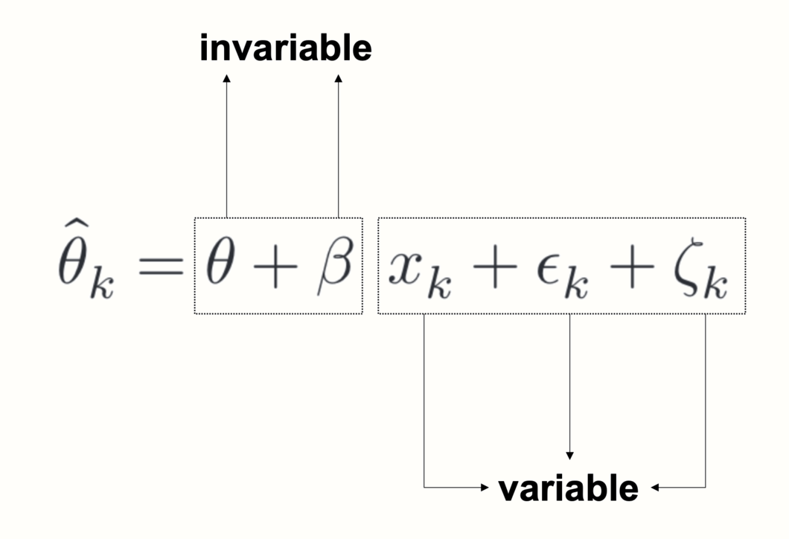
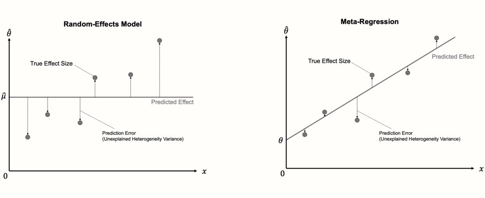

Meta回归

I 在上一章中，我们增加了亚组分析作为元分析“工具箱”中的一种新方法。正如我们所学到的，亚组分析将我们分析的重点从寻找一个总体效应转移开。相反，它们允许我们研究数据中异质性的模式，以及导致这些模式的原因。
我们还提到亚组分析是 元回归 的一种特殊形式。您很可能以前听说过“回归”这个术语。回归分析是最常见的统计方法之一，被用于各个学科。在其最简单的形式中，回归模型试图使用某个变量 \(x\) 的值来预测另一个变量 \(y\) 的值。通常，回归模型基于包含个体或样本的数据，对于这些个体或样本，测量了 \(x\) 和 \(y\) 的值。
在元回归中，这种逻辑被应用于 整个研究。变量 \(x\) 代表研究的特征，例如进行研究的年份。基于这些信息，元回归模型试图预测 \(y\)，即研究的效应量。然而，使用效应量作为预测变量这一事实增加了一些复杂性。
在第 @ref(what-is-es) 章中，我们已经了解到观察到的效应量 \(\hat\theta\) 可能是研究真实效应的或多或少的 精确 估计量，这取决于它们的标准误差。在“正常”的元分析中，我们通过给予研究较小或较高的权重来考虑到这一点。在元回归中，我们还必须确保模型更加关注抽样误差较低的研究，因为我们可以假设它们的估计值更接近“真相”。
元回归通过假设一个 混合效应模型 来实现这一点。该模型解释了观察到的研究由于抽样误差和研究间异质性而偏离真实总体效应的事实。然而，更重要的是，它还使用一个或多个变量 \(x\) 来预测真实效应量中的差异。我们已经在上一章中提到亚组分析也基于混合效应模型。在本章中，我们将深入探讨一下，并讨论为什么亚组分析和元回归本质上是相关的。
元回归虽然有其自身的局限性，但在元分析中可能是一种非常强大的工具。它也用途广泛：例如，多元元回归 允许我们不仅包括一个，而是包括几个预测变量，以及它们的交互作用。因此，在本章的第二部分，我们还将了解多元元回归，以及如何使用 R 进行分析。
元回归模型
过去，您可能已经使用主要研究数据执行过回归，其中参与者是分析的单位。在元分析中，通常无法获得每个参与者的个人数据，我们只能求助于汇总结果。这就是为什么我们必须使用 研究层面 的预测变量来进行元回归。
这也意味着，虽然我们对样本进行分析，其样本量远大于主要研究的通常样本量，但我们仍然可能没有足够的数据点来使元回归有用。在第 @ref(limits-subgroup) 章中，我们已经介绍了当 \(K<\) 10 时，亚组分析通常没有意义。Borenstein 及其同事 [-@borenstein2011introduction, 第 20 章] 提到，该指导原则也可以应用于元回归模型，但不应将其视为铁律。
在传统的回归中，我们想要使用具有回归系数 \(\beta\) 的 预测变量 (或 协变量) \(x_i\) 来估计人 \(i\) 的值 \(y_i\)。因此，标准的回归方程如下所示：
\[\begin{equation} \hat{y_i} = \beta_0 + \beta_1x_i (\#eq:mr1) \end{equation}\]
在元回归中，我们想要预测的变量 \(y\) 是研究 \(k\) 的观察到的效应量 \(\hat\theta_k\)。元回归 的公式与普通回归模型的公式相似：
\[\begin{equation} \hat\theta_k = \theta + \beta x_{k} + \epsilon_k+\zeta_k (\#eq:mr2) \end{equation}\]
请注意，此公式包含两个额外的项，\(\epsilon_k\) 和 \(\zeta_k\)。在随机效应模型 (第 @ref(rem) 章) 的公式中也可以找到相同的项，并且表示两种类型的独立误差。第一个误差 \(\epsilon_k\) 是抽样误差，通过该抽样误差，研究的效应量偏离了其真实效应。
第二个误差 \(\zeta_k\) 表示即使研究的真实效应量也仅是从效应量的一个总体分布中抽样的。这意味着我们的数据中存在研究间异质性，异质性方差 \(\tau^2\) 捕捉了这一点。
由于上面的公式包含一个 固定 效应 (\(\beta\) 系数) 以及一个 随机 效应 (\(\zeta_k\))，因此元回归中使用的模型通常被称为 混合效应模型。从概念上讲，该模型与我们在第 @ref(comparing-the-subgroup-effects) 章中描述的混合效应模型相同，我们在该章中解释了亚组分析如何工作。
具有分类预测变量的元回归
实际上，正如之前提到的，亚组分析只不过是用分类预测变量进行的元回归。这种分类变量可以通过 虚拟编码 来包括，例如：
\[\begin{equation} D_g=\begin{cases} 0: & \text{亚组 A}\\ 1: & \text{亚组 B.} \end{cases} (\#eq:mr3) \end{equation}\]
要以元回归的形式指定亚组分析，我们只需将协变量 \(x_k\) 替换为 \(D_g\)：
\[\begin{equation} \hat\theta_k = \theta + \beta D_g +\epsilon_k+\zeta_k. (\#eq:mr4) \end{equation}\]
要理解这个公式，我们必须从左到右阅读它。与每个统计模型一样，元回归模型的目标是解释观察到的数据是如何生成的。在我们的例子中，这是我们的元分析中某个研究 \(k\) 的观察到的效应量 \(\hat\theta_k\)。上面的公式就像一个食谱，告诉我们产生观察到的效应量需要哪些成分。
首先，我们取 \(\theta\)，它充当我们的回归模型中的 截距。\(\theta\) 的值与亚组 A 的真实总体效应量相同。要了解为什么会这样，我们需要查看下一个“成分”，即项 \(\beta D_g\)。此项中的 \(\beta\) 值表示亚组 A 和亚组 B 之间的效应量差异 \(\theta_{\Delta}\)。\(\beta\) 的值乘以 \(D_g\)，它可以是 0 或 1，具体取决于研究是亚组 A (\(D_g = 0\)) 还是亚组 B (\(D_g = 1\)) 的一部分。
由于乘以零得到零，因此当我们处理亚组 A 中的研究时，\(\beta D_g\) 项完全从方程中消失了。另一方面，当 \(D_g=1\) 时，我们乘以 1，这意味着 \(\beta\) 留在方程中并添加到 \(\theta\)，这为我们提供了亚组 B 中的总体效应量。从本质上讲，虚拟预测变量是将 两个 公式集成到 一个 公式中的一种方法。当我们分别为每个亚组写下公式时，我们可以很容易地看到这一点：
\[\begin{equation} D_g=\begin{cases} 0: & \text{$\hat\theta_k = \theta_A + \epsilon_k+\zeta_k$}\\ 1: & \text{$\hat\theta_k = \theta_A + \theta_{\Delta} +\epsilon_k+\zeta_k$} \end{cases} (\#eq:mr5) \end{equation}\]
以这种方式编写，可以更清楚地看到我们的公式实际上包含两个模型，一个用于亚组 A，一个用于亚组 B。模型之间的主要区别在于，第二个亚组的效应根据 \(\beta\) 的值（我们在上面的公式中表示为 \(\theta_{\Delta}\)）向上或向下“移动”。
这应该清楚地表明，亚组分析的工作方式就像普通的回归一样：它们使用某个变量 \(x\) 来预测 \(y\) 的值，在我们的例子中，它是研究的效应量。特别之处在于 \(\beta x_k\) 不是连续的——这是一个固定值，我们根据研究是否属于某个亚组来添加到预测中。\(\beta\) 的这个固定值是两个亚组之间效应量估计的差异。
具有连续预测变量的元回归
然而，当人们谈论“元回归”时，他们通常会想到使用 连续 变量作为预测变量的模型。这使我们回到方程 8.2 中所示的通用元回归公式。在这里，我们之前讨论过的回归项也被使用，但它们的目的略有不同。\(\theta\) 项再次代表截距，但现在代表当 \(x = 0\) 时的预测效应量。
截距加上了项 \(\beta x_k\)。这一部分产生一个 回归斜率：连续变量 \(x\) 乘以 回归权重 \(\beta\)，从而降低或提高协变量不同值的预测效应。
元回归模型的目标是找到 \(\theta\) 和 \(\beta\) 的值，这些值可以最小化 预测 效应量与研究的 真实 效应量之间的差异 (参见图 @ref(fig:subgroups3))。

仔细观察元回归公式，我们看到它包含两种类型的项。有些项包含下标 \(k\)，而另一些则不包含。下标 \(k\) 表示一个值在研究之间 变化。当一个项不包含下标 \(k\) 时，这意味着它对于所有研究保持不变。

在元回归中，\(\theta\) 和 \(\beta\) 都是不变的，或固定的。这告诉我们元回归的作用：基于预测变量的变化和观察到的效应，它试图以 回归线 的形式“提炼”出我们数据的基础 固定模式。如果元回归模型与数据拟合良好，则可以使用估计的参数 \(\theta\) 和 \(\beta\) 来预测模型 以前从未见过 的研究的效应量 (前提是我们知道 \(x\))。
考虑到抽样误差 \(\epsilon_k\) 和研究间异质性 \(\zeta_k\)，元回归因此试图找到一个 泛化 良好的模型；不仅适用于观察到的效应量，还适用于所有可能感兴趣的研究的“宇宙”。
评估模型拟合度
关于元回归模型的一个重要细节是，它们可以被视为我们用来汇集效应量的“正常”随机效应模型的扩展。随机效应模型只不过是一个 没有斜率项 的元回归模型。由于它不包含斜率，因此随机效应模型仅预测每个研究的 相同值：汇集效应量 \(\mu\) 的估计值，该估计值与截距等效。
因此，在第一步中，元回归的计算与随机效应元分析的计算非常相似，因为使用我们在第 @ref(tau-estimators) 章中描述的方法之一 (例如，DerSimonian-Laird 或 REML 方法) 估计了研究间异质性 \(\tau^2\)。在下一步中，估计固定权重 \(\theta\) 和 \(\beta\)。正常的线性回归模型使用 普通最小二乘法 (OLS) 来找到最适合数据的回归线。在元回归中，使用一种称为 加权最小二乘法 (WLS) 的修改方法，该方法确保标准误差较小的研究获得较高的权重。
找到最佳解决方案后，我们可以检查新添加的回归项是否解释了效应量异质性的部分。如果元回归模型与数据拟合良好，则与汇集效应 \(\hat\mu\) 相比，真实效应量应更少地偏离回归线。如果是这种情况，则预测变量 \(x\) 解释 了我们元分析中的一些异质性方差。

因此，可以通过检查它解释了多少异质性方差来评估元回归模型的拟合度。混合效应模型中包含的预测变量应最小化 残差 或未解释的异质性方差量，我们用 \(\tau^2_{\text{unexplained}}\) 表示。
在回归分析中，通常使用 \(R^2\) 指数来量化模型解释的变异百分比。对于元回归，也可以计算一个类似的指数 \(R^2_{*}\)。我们在此处添加一个星号，以表明元回归中的 \(R^2\) 与传统回归中使用的 \(R^2\) 略有不同，因为我们处理的是 真实效应量 而不是观察到的数据点。\(R^2_*\) 的公式如下所示：
\[\begin{equation} R^2_* = 1- \frac{\hat\tau^2_{\text{unexplained}}}{\hat\tau^2_{\text{(total)}}} (\#eq:mr6) \end{equation}\]
\(R^2_*\) 使用了即使元回归斜率也无法解释的残余异质性方差量，并将其与我们最初在元分析中发现的总异质性相关联。从 1 中减去该分数后，我们可以得到预测变量解释的研究间异质性的百分比。
还有另一种表示 \(R^2_*\) 的方法。我们可以说它表示与初始随机效应汇集模型相比，混合效应模型 减少 了多少异质性方差，以百分比表示。这将产生以下公式：
\[\begin{equation} R^2_* = \frac{\hat\tau^2_{\text{REM}}-\hat\tau^2_{\text{MEM}}}{\hat\tau^2_{\text{REM}}} (\#eq:mr7) \end{equation}\]
在此公式中，\(\hat\tau^2_{\text{REM}}\) 表示在随机效应汇集模型中发现的研究间异质性的量，\(\hat\tau^2_{\text{MEM}}\) 表示混合效应元回归模型中的 (残余) 方差 (即，关于真实效应量的“预测误差”)。
通常，我们不仅对回归模型解释的异质性量感兴趣，还对我们的预测变量 \(x\) 的回归权重是否显着感兴趣。如果是这种情况，我们可以非常有把握地认为 \(x\) 对研究的效应量有影响。在传统回归和元回归中，通常通过 Wald 型 检验来评估回归权重的显着性。这涉及通过将其标准误差除以 \(\beta\) 的估计值来计算检验统计量 \(z\)：
\[\begin{equation} z = \frac{\hat\beta}{SE_{\hat\beta}} (\#eq:mr8) \end{equation}\]
在 \(\beta = 0\) 的原假设下，此 \(z\) 统计量服从标准正态分布。这使我们能够计算相应的 \(p\) 值，该值确定预测变量是否显着。
然而，基于 \(z\) 统计量的检验并不是评估预测变量显着性的唯一方法。与正常的元分析模型一样，我们也可以使用 Knapp-Hartung 调整，这会导致基于 \(t\) 分布的检验统计量 (参见第 @ref(knapp-hartung) 章)。正如我们之前所了解的，通常建议使用 Knapp-Hartung 方法，因为它降低了误报的风险。
在 R 中进行元回归
{meta} 包包含一个名为 metareg 的函数，该函数允许我们进行元回归。metareg 函数只需要一个 {meta} 元分析对象和一个协变量的名称作为输入。
在此示例中，我们将再次使用我们的 m.gen 元分析对象，该对象基于 ThirdWave 数据集 (参见第 @ref(pre-calculated-es) 章)。使用元回归，我们想要检查研究的 发表年份 是否可用于预测其效应量。默认情况下，ThirdWave 数据集不包含存储发表年份的变量，因此我们必须创建一个新的 numeric 变量，其中包含此信息。我们只需连接所有研究的发表年份，其顺序与它们在 ThirdWave 数据集中出现的顺序相同。我们将此变量保存在名称 year 下1。
year <- c(2014, 1998, 2010, 1999, 2005, 2014,
2019, 2010, 1982, 2020, 1978, 2001,
2018, 2002, 2009, 2011, 2011, 2013)现在，我们拥有运行元回归所需的所有信息。在 metareg 函数中，我们将我们的元分析对象 m.gen 的名称指定为第一个参数，并将我们的预测变量 year 的名称指定为第二个参数。我们将结果命名为 m.gen.reg。
library(meta)Loading required package: metadatLoading 'meta' package (version 8.1-0).
Type 'help(meta)' for a brief overview.library(dmetar)Extensive documentation for the dmetar package can be found at:
www.bookdown.org/MathiasHarrer/Doing_Meta_Analysis_in_R/data(ThirdWave)
m.gen <- metagen(TE = TE,
seTE = seTE,
studlab = Author,
data = ThirdWave,
sm = "SMD",
comb.fixed = FALSE,
comb.random = TRUE,
method.tau = "REML",
method.random.ci = "HK",
title = "Third Wave Psychotherapies")Warning: Use argument 'common' instead of 'comb.fixed' (deprecated).Warning: Use argument 'random' instead of 'comb.random' (deprecated).m.gen.reg <- metareg(m.gen, ~year)现在，让我们看一下结果：
m.gen.reg## Mixed-Effects Model (k = 18; tau^2 estimator: REML)
##
## tau^2 (estimated amount of residual heterogeneity): 0.019 (SE = 0.023)
## tau (square root of estimated tau^2 value): 0.1371
## I^2 (residual heterogeneity / unaccounted variability): 29.26%
## H^2 (unaccounted variability / sampling variability): 1.41
## R^2 (amount of heterogeneity accounted for): 77.08%
##
## Test for Residual Heterogeneity:
## QE(df = 16) = 27.8273, p-val = 0.0332
##
## Test of Moderators (coefficient 2):
## F(df1 = 1, df2 = 16) = 9.3755, p-val = 0.0075
##
## Model Results:
##
## estimate se tval pval ci.lb ci.ub
## intrcpt -36.15 11.98 -3.01 0.008 -61.551 -10.758 **
## year 0.01 0.00 3.06 0.007 0.005 0.031 **
##
## ---
## Signif. codes: 0 ‘***’ 0.001 ‘**’ 0.01 ‘*’ 0.05 ‘.’ 0.1 ‘ ’ 1让我们回顾一下我们在这里可以看到的内容。在第一行中，输出告诉我们一个混合效应模型已拟合到数据，正如预期的那样。接下来的几行提供了有关模型解释的异质性量的详细信息。我们看到残余异质性方差 (未被预测变量解释的方差) 的估计值为 \(\hat\tau^2_{\text{unexplained}}=\) 0.019。
输出还为我们提供了一个 \(I^2\) 等效值，该值告诉我们，在包含预测变量后，我们数据中 29.26% 的变异性可归因于剩余的研究间异质性。在正常的随机效应元分析模型中，我们发现 \(I^2\) 异质性为 63%，这意味着该预测变量能够“解释掉”真实效应量差异的相当一部分。
在最后一行中，我们看到 \(R^2_*\) 的值，在本示例中为 77%。这意味着真实效应量差异的 77% 可以通过发表年份来解释，这是一个相当大的值。
下一部分包含“残余异质性检验”，这本质上是我们之前已经了解的 \(Q\) 检验 (参见第 @ref(cochran-q) 章)。但是，现在，我们测试未被预测变量解释的异质性是否显着。我们看到情况就是这样，其中 \(p\) = 0.03。但是，我们知道 \(Q\) 检验的局限性 (第 @ref(cochran-q) 章)，因此不应过分依赖此结果。
下一部分显示“调节变量检验”。我们看到此检验也很显着 (\(p\) = 0.0075)。这意味着我们的预测变量 (发表年份) 确实会影响研究的效应量。
最后一部分提供了有关估计的回归系数的更多详细信息。第一行显示截距 (intrcpt) 的结果。当我们的预测变量发表年份为零时，这是预期的效应量 (在我们的例子中：Hedges 的 \(g\))。在我们的示例中，这代表了一种可以说的有点人为的情况：它显示了在第 0 年进行的研究的预测效应，为 \(\hat{g}=\) -36.15。这再次提醒我们，好的统计模型不必是现实的完美表示；它们只需要 有用。
我们主要感兴趣的系数是第二行中的系数。我们看到该模型对 year 的回归权重的估计值为 0.01。这意味着对于每增加一年，预计研究的效应量 \(g\) 将增加 0.01。因此，我们可以说研究的效应量随着时间的推移而增加。95% 的置信区间范围为 0.005 到 0.3，表明该效应很显着。
重要的是，我们还获得了每个回归系数的相应 \(t\) 统计量 (tval)。这告诉我们 Knapp-Hartung 方法用于计算置信区间和 \(p\) 值。由于我们也在最初的元分析模型中使用了此调整，因此 metareg 会自动在此处再次使用它。否则，将提供 \(z\) 值和 Wald 型置信区间。
{meta} 包允许我们使用 bubble 函数可视化元回归。这将创建一个 气泡图，该图显示估计的回归斜率以及每个研究的效应量。为了指示研究的权重，气泡具有不同的大小，较大的大小表示较高的权重。
要生成气泡图，我们只需将我们的元回归对象插入 bubble 函数即可。因为我们也希望显示研究标签，所以我们将 studlab 设置为 TRUE。
bubble(m.gen.reg, studlab = TRUE)
为了完整起见，我们还可以尝试重复上一章 (第 @ref(subgroup-R) 章) 中的亚组分析，但这次在元回归框架内。这意味着我们使用偏倚风险评估作为分类预测变量。由于变量 RiskOfBias 已经包含在 ThirdWave 数据集中，因此我们不必将此信息保存在额外的对象中。只需再次运行 metareg 函数就足够了，但这次，我们使用 RiskOfBias 作为第二个函数参数。
metareg(m.gen, RiskOfBias)## [...]
## R^2 (amount of heterogeneity accounted for): 15.66%
##
## Test for Residual Heterogeneity:
## QE(df = 16) = 39.3084, p-val = 0.0010
##
## Test of Moderators (coefficient 2):
## F(df1 = 1, df2 = 16) = 2.5066, p-val = 0.1329
##
## Model Results:
##
## estimate se tval pval ci.lb ci.ub
## intrcpt 0.76 0.15 5.00 0.0001 0.44 1.09 ***
## RiskOfBiaslow -0.29 0.18 -1.58 0.1329 -0.69 0.10
## [...]
在输出中，我们看到 \(R^2_*\) 的值 (15.66%) 远小于 year 的值。与我们之前的结果一致，我们看到偏倚风险变量不是显着的效应量预测变量 (\(p\) = 0.13)。
在 Model Results 下，我们看到 metareg 已自动将 RiskOfBias 转换为虚拟变量。表示“高风险”亚组的汇集效应的截距估计值为 \(g\)=0.76。表示具有 低 偏倚风险的研究的回归系数的估计值为 -0.29。
为了获得此亚组的效应量，我们必须将回归权重添加到截距，这将导致 \(g=\) 0.76 - 0.29 \(\approx\) 0.47。这些结果与假设 \(\tau^2\) 的共同估计值的亚组分析的结果相同。
多元元回归
之前，我们只考虑了在我们的元回归模型中使用 一个 预测变量 \(\beta x_k\) 的情况。在该示例中，我们检查了研究的效应量是否取决于发表年份。但是现在，假设报告的效应量也取决于研究发表的科学期刊的 声誉。我们认为，在高声誉期刊上的研究可能会报告更高的效应。这可能是因为享有盛誉的期刊更具选择性，并且主要发表具有“突破性”发现的研究。
另一方面，信誉良好的期刊通常发表 更高质量 的研究也是合理的。也许仅仅是更好的研究质量与更高的效应量相关。因此，为了检查期刊声誉是否确实与更高的效应相关，我们必须确保这种关系不会因享有盛誉的期刊更有可能发表高质量证据的事实而 混淆。这意味着我们在检查期刊声誉与效应量之间的关系时，必须 控制 研究质量。
这个问题以及许多其他研究问题都可以使用 多元元回归 来处理。在多元元回归中，我们使用多个预测变量而不是仅使用一个来解释效应的变化。为了允许使用多个预测变量，我们需要修改我们之前的元回归公式 (参见方程 8.2)，使其如下所示：
\[\begin{equation} \hat \theta_k = \theta + \beta_1x_{1k} + ... + \beta_nx_{nk} + \epsilon_k + \zeta_k (\#eq:mr10) \end{equation}\]
此公式告诉我们可以向我们的元回归模型添加 \(n-1\) 个以上的预测变量 \(x\)，从而将其转换为多元元回归。公式中的三个点表示从理论上讲，我们可以根据需要添加任意数量的预测变量。然而，在现实中，事情通常更棘手。在下文中，我们将讨论多元元回归中的一些重要陷阱，以及如何构建稳健且值得信赖的模型。但首先，让我们介绍多元元回归的另一个重要特征，交互作用。
交互作用
到目前为止，我们仅考虑了在我们的模型中具有多个预测变量 \(x_1, x_2, \dots x_n\) 的情况，这些预测变量与它们的回归权重 \(\beta\) 一起加在一起。然而，多元元回归模型不仅限于这种 加法 关系。它们还可以对预测变量 交互作用 进行建模。交互作用意味着一个预测变量 (例如，\(x_1\)) 和估计的效应量之间的 关系 对于另一个协变量 (例如，\(x_2\)) 的不同值会 改变。
假设我们想要对两个预测变量以及它们与效应量的关联方式进行建模：研究的发表年份 (\(x_1\)) 和质量 (\(x_2\))。研究质量的编码如下：
\[\begin{equation} x_2=\begin{cases} 0: & \text{低}\\ 1: & \text{中等}\\ 2: & \text{高.} \end{cases} (\#eq:mr11) \end{equation}\]
当我们假设发表年份和研究质量之间没有交互作用时，我们可以通过为 \(x_1\) 和 \(x_2\) 都赋予一个回归权重 \(\beta\)，并在我们的公式中 添加 这些项来构建元回归模型：
\[\begin{equation} \hat \theta_k = \theta + \beta_1x_{1k} + \beta_2x_{2k} + \epsilon_k + \zeta_k (\#eq:mr12) \end{equation}\]
但是，如果 \(x_1\) 和 \(x_2\) 之间的关系更复杂呢？与我们之前的示例一样，发表年份越近，效应越高，这是有可能的。但并非所有研究都必须遵循这一趋势。也许这种增长在高质量研究中最为明显，而低质量研究的结果随着时间的推移基本上保持不变。我们可以通过以下方式可视化效应量 (\(\hat\theta_k\))、发表年份 (\(x_1\)) 和研究质量 (\(x_2\)) 之间假设的关系：
该图显示了交互作用的经典示例。我们看到回归斜率的陡峭程度取决于另一个预测变量的值。虽然高质量研究的斜率非常陡峭，表明年份和效应之间存在很强的关系，但低质量研究的情况有所不同。该亚组中的回归线几乎是水平的，表明发表年份对结果没有影响，甚至有轻微的负面影响。
此示例显示了交互作用的优势之一：它们允许我们检查预测变量的影响在所有研究中是否相同，或者它是否受到另一个特征的调节。
为了通过元回归评估交互作用，我们需要向模型中添加一个 交互项。在我们的示例中，这可以通过添加第三个回归权重 \(\beta_3\) 来实现，该权重捕获我们想要在模型中测试的交互作用 \(x_{1k}x_{2k}\)。这给出了以下公式：
\[\begin{equation} \hat \theta_k = \theta + \beta_1x_{1k} + \beta_2x_{2k} + \beta_3x_{1k}x_{2k}+ \epsilon_k + \zeta_k (\#eq:mr13) \end{equation}\]
虽然线性多元元回归模型仅包含这些简单的构建块，但它们适用于各种应用。但是，在我们开始使用 R 拟合多元元回归之前，我们应该首先考虑它们的局限性和陷阱。
多元元回归中的常见陷阱
多元元回归虽然在正确应用时非常有用，但存在一定的注意事项。有些人认为，在实践中经常不正确地使用和解释 (多元) 元回归，导致结果的有效性较低 [@higgins2004controlling]。在拟合多元元回归模型时，我们必须牢记一些要点，我们将在下文中介绍。
过拟合：看到没有信号的地方
为了更好地理解 (多元) 元回归模型的风险，我们必须理解 过拟合 的概念。当我们构建一个与数据 过于 紧密拟合的统计模型时，就会发生过拟合。从本质上讲，这意味着我们构建了一个统计模型，它可以 非常 好地预测 手头 的数据，但在预测 未来 数据方面表现不佳。
当我们的模型假设我们数据中的某些变化来自真实的“信号”时，实际上我们只捕获了随机噪声 [@iniesta2016machine]，就会发生这种情况。因此，该模型会产生 假阳性 结果：它会在没有关系的地方看到关系。

对于模型拟合，回归使用 优化 技术，例如普通最小二乘法或最大似然估计。正如我们所了解的，元回归使用加权版本的普通最小二乘法 (参见第 @ref(metareg-model-fit) 章)，因此也不例外。
然而，这种“贪婪”的优化意味着回归方法可能容易过度拟合 [@gigerenzer2004mindless]。不幸的是，一旦我们从传统回归过渡到元回归，构建非稳健模型的风险就会更高。出现这种情况有几个原因 [@higgins2004controlling]：
在元回归中，数据点的数量通常很小，因为我们只能使用包含研究的汇总信息。
由于元分析旨在全面概述所有可用的证据，因此我们没有额外的数据可以用来“测试”我们的回归模型在预测未见数据方面的表现如何。
在元回归中，我们必须处理效应量异质性的潜在存在。想象一下，我们有两个具有不同效应量和非重叠置信区间的研究的情况。对于这两项研究具有不同值的每个变量都可能是效应量差异的潜在解释。然而，似乎很明显，这些解释中的大多数将是虚假的。
元回归通常，尤其是多元元回归，可以非常容易地“摆弄”预测变量。我们可以测试许多元回归模型，包括更多预测变量或删除它们，以尝试解释我们数据中的异质性。这种方法很诱人，并且在实践中经常发现，因为元分析师想要找到效应量不同的原因 [@higgins2002statistical]。然而，这种行为已被证明会大大增加虚假发现的风险，因为我们可以无限期地更改我们模型的各个部分，直到我们找到一个显着的模型，该模型很可能被过度拟合 (即，它主要模拟统计噪声)。
已经提出了一些指导原则，以避免
Footnotes
我们在本示例中使用的发表年份是虚构的，仅用于说明目的。↩︎